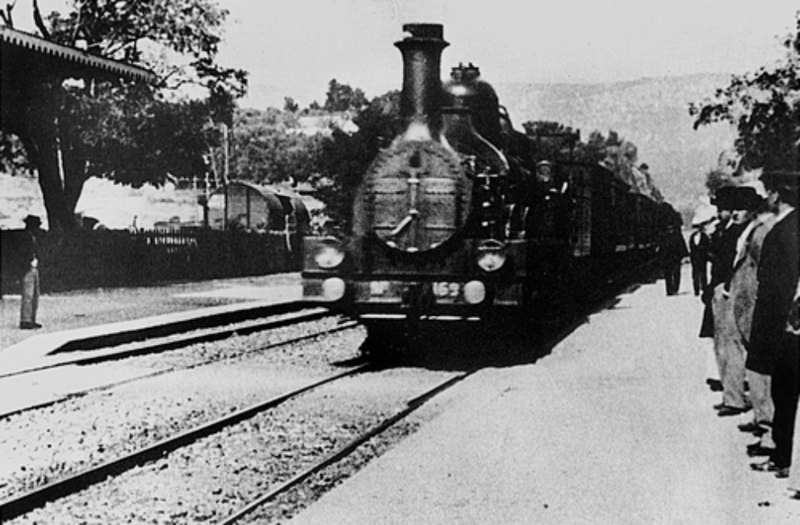
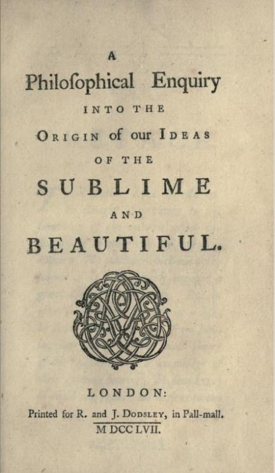

Burke 在 1757 年把「崇高」和「優美」拆成兩種來源不同的感受：崇高來自危險與痛苦的觀念，而且只有在我們和危險隔著一段距離時才成立；優美來自愛與愉悅。學會這個區分，你就能說清楚恐怖片、暴風雨、巨大建築為什麼讓人想一看再看。
電影史上流傳最廣的一個故事是這樣的：盧米埃兄弟（Auguste and Louis Lumière）放映一段火車進站的短片，銀幕上的火頭朝鏡頭駛來，第一批觀眾以為火車要衝出銀幕，尖叫著逃離座位（見圖 1）。這個故事出現在無數教科書、紀錄片和電影課的第一堂。

圖 1｜《L'Arrivée d'un train à La Ciotat》的一格畫面，火車從畫面深處斜向駛近鏡頭。Commons 標示此格出自 1897 年拍攝的版本（Lumière 拍過不只一個版本）。來源：Louis Lumière，1897。授權：Public domain，來源頁面
已被反駁（依二手文獻）：德國電影史學者 Martin Loiperdinger 在 2004 年的論文〈Lumière's Arrival of the Train: Cinema's Founding Myth〉（《The Moving Image》第 4 卷第 1 期）查找當時的報導，找不到觀眾恐慌逃跑的同期記載，認為這是後來才形成的傳說。他也指出這部片其實經過安排，月台上的「乘客」有幾位是 Lumière 家族成員，被交代不要看鏡頭。本課程無法直接開啟論文全文，以上依 Ray Zone 2004 年刊於 International Documentary Association 網站的書評轉述。
傳說站不住腳，可是它為什麼這麼好賣？因為它描寫的是一個「距離崩塌」的瞬間：觀眾本來安全地坐在暗處看危險，忽然以為危險真的要撞上來。快樂在那一刻變成純粹的驚恐。兩百多年前，有一位愛爾蘭作家正好把這條界線寫成了理論。
史料：1757 年，倫敦的 R. and J. Dodsley 出版了一本書，書名是《A Philosophical Enquiry into the Origin of Our Ideas of the Sublime and Beautiful》，封面上沒有作者名字（見圖 2）。作者是 Edmund Burke，後來以政治家與《法國大革命的反思》聞名。1759 年的第二版增加了一篇〈Introduction on Taste〉並大幅修訂。

圖 2｜《A Philosophical Enquiry into the Origin of Our Ideas of the Sublime and Beautiful》初版書名頁，只印出版者與年份 MDCCLVII（1757），沒有作者名。來源：Edmund Burke，R. and J. Dodsley 出版，1757；掃描自 University of California Libraries 藏本（Internet Archive）。授權：CC0 1.0，來源頁面
經典理論：以下是 Burke 的主張，他用的方法是觀察自己與他人的反應，再往身體與激情找原因，並沒有做實驗。
兩種激情。Burke 把人的激情分成兩大類。一類關乎自我保存，圍繞著痛苦與危險；另一類關乎社會，圍繞著愛與愉悅。他認為痛苦的觀念比快樂的觀念強烈得多，所以凡是能引起痛苦、危險或恐怖觀念的東西，就是崇高的來源，它產生的是心靈能感受到的「strongest emotion」（第一部第七節）。
距離是開關。同一節裡有一句關鍵的限制：危險或痛苦逼得太近時，它們只是「simply terrible」，毫無樂趣可言；隔著「certain distances」並經過某些調整，它們就能讓人欣喜。Burke 特意區分兩個詞：正面的快樂叫 pleasure，因痛苦被移除或遠離而來的那種感受叫 delight。他在第二部描述崇高時用了一個矛盾的詞組「delightful horror」，讓人欣喜的恐懼（見圖 3）。
圖 3｜Burke 的崇高與優美：上半是兩種激情的來源，下半是第三部第二十七節〈The Sublime and Beautiful Compared〉列出的對比。來源：本課程依 Edmund Burke《A Philosophical Enquiry into the Origin of Our Ideas of the Sublime and Beautiful》（1757）第一部第七節、第十八節與第三部第二十七節繪製。
崇高的來源清單。第二部是一張很實用的清單，每一項都可以拿來檢查作品：
優美的性質。第三部則說，優美的對象相對小、光滑、線條漸次變化而不突兀、纖細、顏色明淨柔和。Burke 承認現實中的東西常常兩者混合，但他堅持兩者來源不同，一個建立在痛苦上，一個建立在愉悅上。
經典理論：Burke 還試著用生理解釋收尾。他在第四部主張，崇高的恐懼讓神經與肌肉緊繃，像一種運動；優美則讓身體的纖維放鬆。三十多年後，Kant 在《判斷力批判》（1790）第一部〈對審美反思判斷之說明的總附註〉裡稱 Burke 是採取這種「生理學式」說明的作者中最重要的一位，並認為這種說明只停留在經驗心理學，不能回答美感判斷為何能要求別人同意（依 J. H. Bernard 1914 年英譯本）。上一堂談到的 Kant，就是在 Burke 的地基上另起爐灶。
史料：《Nosferatu – Eine Symphonie des Grauens》（1922），導演 Friedrich Wilhelm Murnau，攝影 Fritz Arno Wagner，美術與服裝 Albin Grau，Max Schreck 飾演 Orlok 伯爵，1922 年 3 月 4 日在柏林首映。這部片未經授權改編 Bram Stoker 的《Dracula》，Stoker 的遺孀 Florence 提告勝訴，法院下令銷毀所有拷貝，但命令沒有完全執行，拷貝才留存至今。片中劇照的德國著作權狀態有爭議，本課程不放圖，你可以在 Internet Archive 的頁面觀看全片。
拿 Burke 的清單一項一項對照這部片，會發現它幾乎是一本視覺化的《Enquiry》。以下對照是本課程的分析，沒有文獻顯示 Murnau 讀過 Burke。
晦暗：讓影子代替身體。接近片尾，Orlok 走向 Ellen 的房間。觀眾看到的是他的影子沿著樓梯牆面往上爬，細長的手指影子伸向門把，接著影子的手覆過 Ellen 的身體，在她胸口收攏。這段戲裡我們幾乎看不到 Orlok 本人。德國聯邦政治教育中心（bpb）為這部片出版的 DVD 手冊中，影評人 Lars Penning 寫道，Orlok 尖耳朵與帶爪的手指投下的影子，由攝影師 Wagner 拍得格外有效果；他也指出 Murnau 偏好暗示，連 Hutter 在城堡裡遇到的恐怖是否只是幻想，片子都不給確定答案。這正是 Burke 說的：看清全貌，恐懼就少一半。Milton 寫「死亡」時拿掉形體，Murnau 拿掉身體只留影子，做法如出一轍。
力量：由下往上的鏡頭。在運送棺木的船上，棺蓋自己打開，Orlok 整個人筆直地從棺材裡立起來，沒有彎腰、沒有用手撐。Penning 也提到另一個鏡頭，攝影機從船艙口往上拍（仰角），讓 Orlok 緩慢走過甲板，身形更加高瘦。仰角讓觀眾站在比他低的位置，Burke 所說「我們無法控制的力量」被轉成了攝影機的高度。
匱乏：孤獨與寂靜。手冊指出，Ellen 獨坐在沙丘上的水手墓地、四周是歪斜十字架的那一幕，構圖明顯受到 Caspar David Friedrich 的風景畫啟發。畫面裡只有一個人、一片海、一排十字架，Burke 列的空虛、孤獨、寂靜都在。片子本身是默片，首映時配有 Hans Erdmann 的配樂，但很多段落的恐怖靠的是畫面裡的「什麼都沒有」。
光：最後的轉換。Orlok 最後在晨光照進房間時消失。Burke 說光要成為崇高，得是強光或光暗的急遽轉換；Murnau 讓整部片的黑暗在幾秒鐘內被日光終結。
距離：座位就是安全區。回到故事引入的火車。Burke 的條件是危險不能「press too closely」。電影院提供的正是那段距離：黑暗、座位、銀幕的框。Nosferatu 把危險做得越來越近，影子從樓梯一路爬到 Ellen 身上，但它停在銀幕裡。觀眾知道自己不會被咬，所以能「欣喜地」害怕。火車傳說之所以吸引人，就在於它想像這段距離失效的瞬間。
Burke 自己就把聲音寫進崇高清單：極大的音量、突然開始的聲音。Haydn 的神劇《Die Schöpfung》（創世記）有一段經常被拿來討論這兩項。史料：此作 1798 年 4 月在維也納 Schwarzenberg 宮私下首演，1799 年 3 月 19 日在城堡劇院（Burgtheater）公開演出。
開頭是一段描寫「混沌」的管弦樂前奏，接著合唱團輕聲唱出「Es werde Licht」（要有光），弦樂撥奏，音量壓得很低；唱到「und es ward Licht」（就有了光）的「Licht」這個字，整個樂團和合唱突然以極強（fortissimo）奏出 C 大調和弦。你可以在 IMSLP 的 1800 年初版總譜對照這一頁。用 Burke 的話說，這裡同時用了「suddenness」和「loudness」，還加上他在光的那一節說的光暗急遽轉換，只是這次是用聲音模擬光。
經典理論：音樂學者 Lawrence Kramer 在 2009 年的論文〈Recalling the Sublime: The Logic of Creation in Haydn's Creation〉（《Eighteenth-Century Music》第 6 卷第 1 期）主張，這部神劇以混沌與光的誕生這兩段「音樂的崇高」開場，之後的部分則把崇高轉為回憶。
史料（依二手文獻）：據 Nicholas Temperley《Haydn: The Creation》（Cambridge University Press，1991）轉述，當時在場的瑞典外交官 Fredrik Samuel Silverstolpe 回憶，光出現的那一刻，作曲者眼中彷彿射出光芒，維也納聽眾激動到樂團好幾分鐘無法繼續。本課程未能直接查閱該書頁面，此段僅供參考。
和 Nosferatu 放在一起看：電影靠「看不清」製造崇高，Haydn 靠「聽不到」之後的突然爆發。兩者都需要聽眾坐在安全的位置上。
誤解一：崇高就是「很美很壯觀」。中文的「崇高」聽起來像讚美詞。在 Burke 的用法裡，崇高的核心是恐懼和痛苦的觀念，壯觀只是其中一個來源（巨大）。一個漂亮的大花園可以很壯觀，卻不一定崇高；一條黑暗的樓梯間很小，卻可能崇高。
誤解二：越恐怖越崇高。Burke 明確設了上限：危險逼得太近，就只剩恐怖。真正被困在火場裡的人不會覺得崇高。這也是為什麼恐怖片太血腥、太直接時，有些觀眾反而只覺得噁心，沒有那種「想一直看下去」的吸引力。
誤解三：Burke 的分類已被科學證實。Burke 的方法是內省與舉例，他對神經緊繃、放鬆的生理解釋沒有實驗根據，Kant 當時就批評這種說明停在經驗心理學。今天可以把它當作一份好用的觀察清單，不能當成實證結論。
誤解四：出版年份是 1756。1887 年 John C. Nimmo 版《Burke 全集》第一卷的註記寫「初版 1756、第二版 1757」，這個說法流傳很廣。初版書名頁印的是 MDCCLVII（見圖 2），現行學術版本也以 1757 年為初版、1759 年為增訂第二版。
看（5 分鐘）：晚上找一段家裡或公寓的樓梯間、走廊，先開燈看一次，再關燈只留遠處一點光看一次。記下兩次你注意到的東西有什麼不同：哪些輪廓消失了？你的注意力被什麼吸過去？
做（10 分鐘）：
回顧（5 分鐘）：
延伸閱讀：想讀 Burke 原文，先讀第一部第七節與第二部第三節〈Obscurity〉，各不到兩頁；再讀第三部第二十七節的對照，三段就能抓到全書骨架。